Gráficos com ggplot 1.0 Adicionando camadas em um gráfico de linha (Scaterplot) 1.1 Camada Estética (aes) 1.2 Histogramas e densidade 1.3 Gráfico de barras (barplot) 1.4 boxplot 1.5 gráficos de linha 1.6 Gráficos interativos
Gráficos com ggplot
O ggplot2 é uma pacote do R, também criado por Hadley Wickham, que faz parte do tidyverse e implementa um sistema de gráficos baseados em uma gramatica própria permitindo a criação de gráficos avançados. Essa gramatica se encarrega de diversos detalhes que precisariam ser especificados se fossemos fazer usando o modulo base do R. A gramatica do ggplot2 é portanto diferente dos demais pacotes gráficos existentes no R e faz com que pareça mais complicado de se chegar ao resultado desejado, no entanto, como no dplyr após nos familiarizarmos com ela, podemos através da combinação de seus diversos elementos usando poucas linhas conseguimos produzir gráficos bastante complexos , multicamadas e com excelente qualidade final.
Usando essa gramatica e possível combinar seus elementos e facilmente criar novos gráficos de muitas maneiras customizando seu aspecto. Atualmente podemos encontrar mais de 70 pacotes do R que estendem ou implementam funções gráficas da ggplot2 podemos ver Aqui alguns desses pacotes.
a gramatica da ggplot2 consiste dos seguintes elementos que representam camadas:
| Elemento | Descição | Funções |
|---|---|---|
| Dado (Data) | o conjunto de dados que será usado | ggplot() |
| Estética ( Aesthetics) | variáveis e escalas para mapear o gráfico | aes() |
| Geometria ( Geometries) | elementos visuais usados no gráfico | geom_???() |
| Faceta ( Facets) | múltiplos gráficos (sub painéis) | facet_???() |
| Estatistica ( Statistics) | representação estatística dos dados para melhor entendimento/visualização | stat_???(), |
| Coordenada ( Coordinates) | representação espacial dos dados | coord_???() |
| Tema ( Themes) | estilos cores aspectos gerias | theme_???() |
Para fazer um graficos precisamos pelo menos das camadas de Dados, Estética Geometria
Para saber mais consulte:
1.0 Adicionando camadas em um gráfico de linha (Scaterplot)
Como exemplo para ilustrar como funcionam as camadas na ggplot2 vamos utilizar os dados iris como exemplo. O primeiro passo para se fazer um grafico é conhecer o dado ,então use as funções head() e str() para isso.
> str(iris)'data.frame': 150 obs. of 5 variables:$ Sepal.Length: num 5.1 4.9 4.7 4.6 5 5.4 4.6 5 4.4 4.9 ...$ Sepal.Width : num 3.5 3 3.2 3.1 3.6 3.9 3.4 3.4 2.9 3.1 ...$ Petal.Length: num 1.4 1.4 1.3 1.5 1.4 1.7 1.4 1.5 1.4 1.5 ...$ Petal.Width : num 0.2 0.2 0.2 0.2 0.2 0.4 0.3 0.2 0.2 0.1 ...$ Species : Factor w/ 3 levels "setosa","versicolor",..: 1 1 1 1 1 1 1 1 1 1 ...
agora vamos ao nosso gráfico, suponha que queremos explorar a relação entre o comprimento e a largura da Sépala das especies de Lírios no dado apresentado acima.
No pacote graphics que esta disponível no R bastaria :
xxxxxxxxxx plot(iris$Sepal.Length, iris$Sepal.Width)Ao tentar aplicar a mesma logica ao ggplot2 teríamos:
xxxxxxxxxx ggplot(iris, aes(x = Sepal.Length, y = Sepal.Width)) onde iris é o nome do data.frame , e a função aes representa os aspectos estéticos ou seja, nesse caso os elementos x e y
a linha acima gerar um gráfico sem nenhum elemento
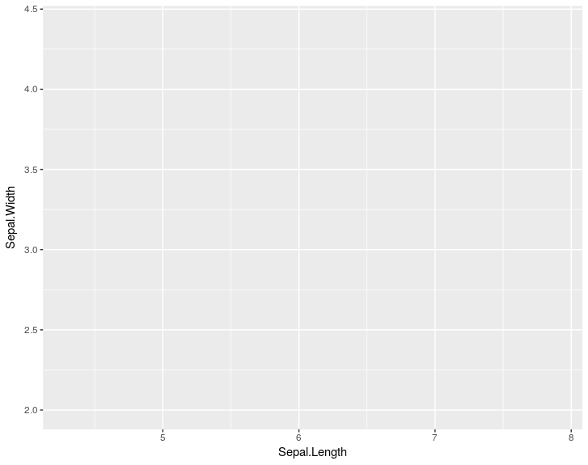
para que possamos visualizar os pontos necessitamos de um elemento geométrico, nesse caso pontos.
xxxxxxxxxxggplot(iris, aes(x = Sepal.Length, y = Sepal.Width)) + geom_point()
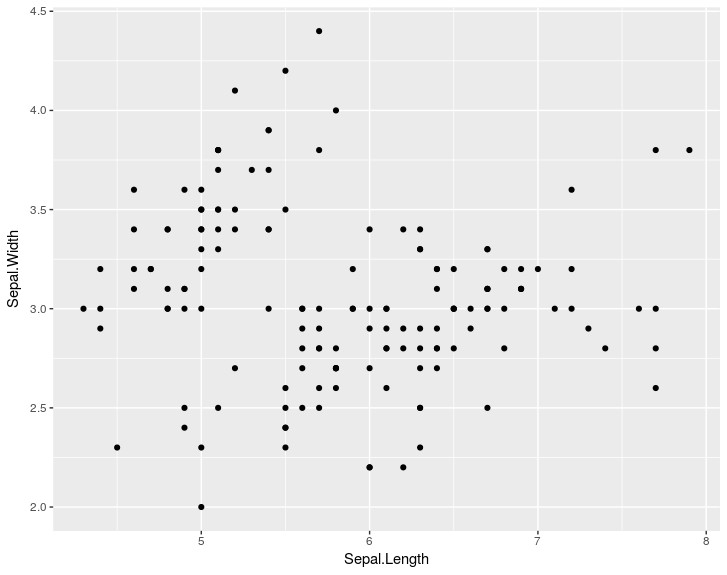
Uma das características interessantes da ggplot2 e que podemos ir armazenando os elementos gráficos e comando as camadas como no comando abaixo:
xxxxxxxxxxp <- ggplot(iris, aes(x = Sepal.Length, y = Sepal.Width))p + geom_point()
vamos supor que queremos cores para cada uma das especies , nesse caso vamos ter de alterar um dos aspectos de mapeamento dos dados (estéticos)
xxxxxxxxxxp <- ggplot(iris, aes(x = Sepal.Length, y = Sepal.Width,color=Species))p + geom_point()
Agora temos além das cores para cada especie , uma legenda. Mas nosso gráficos varias pontos são coincidentes, para melhor exibir esse pontos vamos usar a função geom_jitter() que adiciona um descolamento aleatório a cada dimensão e além disso vamos adicionar uma transparência aos pontos de 60%.
xxxxxxxxxxp + geom_jitter(alpha = 0.6)
repita o comando e veja que o gráfico muda um pouco, uma vez que o "ruido" adicionado pela função é aleatório. repare também que existem pontos mais escuros, ou seja mesmo com o jitter ainda pode haver alguma sobreposição.
Vamos adicionar mais uma camada dividindo em sub painéis por especie.
xxxxxxxxxxggplot(iris, aes(x = Sepal.Length, y = Sepal.Width,color=Species)) +geom_jitter(alpha = 0.6) +facet_grid(. ~ Species)
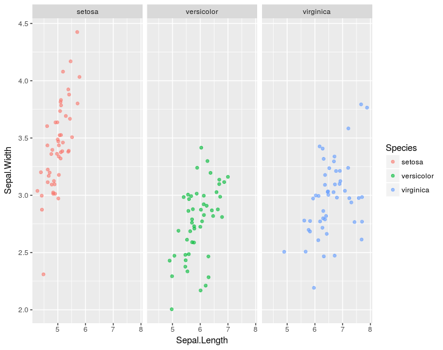
Em seguida vamos adicionar mais uma camada , a estatística adicionando uma reta de regressão linear a cada subplot
xxxxxxxxxxggplot(iris, aes(x = Sepal.Length, y = Sepal.Width,color=Species)) +geom_jitter(alpha = 0.6) +facet_grid(. ~ Species) +stat_smooth(method = "lm", se = F, col = "black")
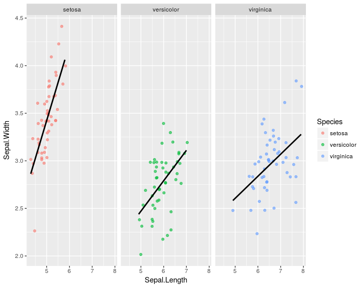
Manipulando uma outra camada, desta vez, a de coordenadas, vamos fazer com que as coordenadas de x e y fique com um espaçamento igual. Para isso vamos usar a função coord_equal()
xxxxxxxxxxggplot(iris, aes(x = Sepal.Length, y = Sepal.Width,color=Species)) +geom_jitter(alpha = 0.6) +facet_grid(. ~ Species) +stat_smooth(method = "lm", se = F, col = "black") +coord_equal()
existem varias outras funções uteis para altera coordenadas, entre as mais usadas poderíamos destacar
scale_x_...() e scale_y_...() onde ... pode ser continuou, date, log etc... permitindo especificar melhor as escalas de x e y de nosso gráfico
mais um aspecto que pode nos interessar aqui é modificar os labels através da função labs()
xxxxxxxxxxggplot(iris, aes(x = Sepal.Length, y = Sepal.Width,color=Species)) +geom_jitter(alpha = 1) +facet_grid(. ~ Species) +stat_smooth(method = "lm", se = F, col = "black") +coord_equal() +labs( title = "Comprimento vs largura da Sépala em 3 especies de Lírios",x="comprimento(cm)" ,y ="largura(cm)" ,color = "Especie" )
no exemplo acima estamos especificando os labels do gráfico, das coordenadas x e y e da legenda de uma só vez. existem ainda as funções ggtitle() , xlab(), ylab() .
podemos alterar ainda a camada do tema , varios temas já configurados estão disponíveis sendo também possível criar seu próprio tema.
xggplot(iris, aes(x = Sepal.Length, y = Sepal.Width,color=Species)) +geom_jitter(alpha = 1) +facet_grid(. ~ Species) +stat_smooth(method = "lm", se = F, col = "black") +coord_equal() +labs( title = "Comprimento vs largura da Sépala em 3 especies de Lírios",subtitle = "Edgar Anderson's Iris Data",x="comprimento(cm)" ,y ="largura(cm)" ,color = "Especie" ) +theme_light()
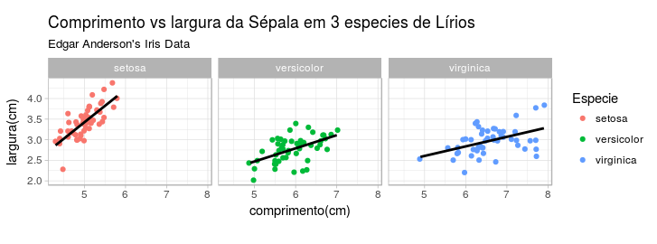
experimente outros temas como por exemplo theme_dark(), theme_minimal(), theme_linedraw(), theme_void() , atribua a parte ate labs a um objeto e depois teste apenas modificando o tema.
1.1 Camada Estética (aes)
Antes de mais nada vamos conhecer um pouco mais as opções disponíveis na camada estética ( aes()), ela possui os seguintes parâmetros.
| Parametro | Descrição |
|---|---|
| x | valores do eixo x |
| y | valores do eixo y |
| colour | cor/cores da linhas externas ou dos pontos |
| fill | cor de preenchimento |
| size | diâmetro do ponto/espesura da linha |
| alpha | transparência (0 - nenhuma a 1 - transparente) |
| linetype | padrão da linha, 1 - solida, 2 a 12 tracejadas (fig 1) |
| labels | texto no gráfico ou nos eixos |
| shape | tipo de simbolo empregado 0 a 25 (fig 2) ou qualquer letra/numero |
A linhas que podemos definir são
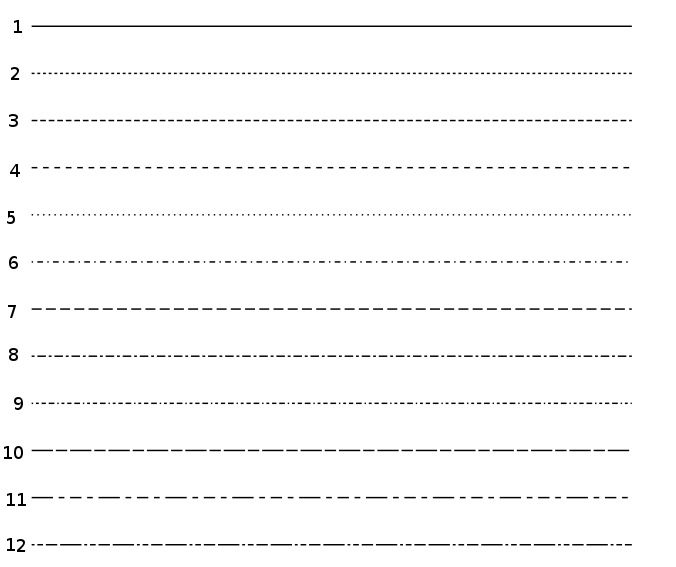
figura 1 - Linhas
e o símbolos , note que para os simbolo sólidos de 21 a 25 pode-se definir a cor da linha com o parâmetro colour e o preenchimento do simbolo com fill
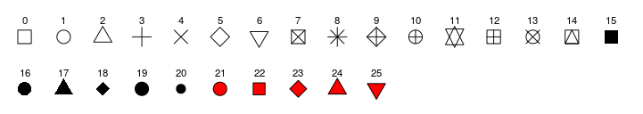
figura 2 - Simbolos
1.2 Histogramas e densidade
Agora que já vimos a ideia de camadas vamos fazer um simples histograma.
xxxxxxxxxxggplot(iris, aes(x = Sepal.Width)) +geom_histogram()repare que a função geom_histogram() retornou uma mensagem de aviso
xxxxxxxxxx`stat_bin()` using `bins = 30`. Pick better value with `binwidth`.podemos especificar a quantidade de classes usando os parâmetros binwidth ou bins. você deve sempre buscar um valor mais adequado o defaul são 30 classes.
xxxxxxxxxxp <- ggplot(iris, aes(x = Sepal.Width)) p + geom_histogram( binwidth = 0.1 )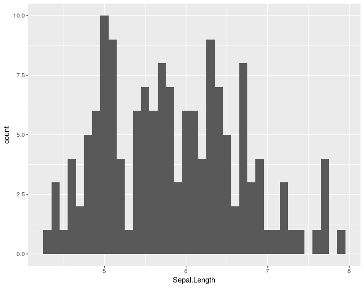
ou
xxxxxxxxxxp + geom_histogram(bins=30)
para converter aproximadamente bins em binwidth , onde 30 seria o numero de bins e o resultado
xxxxxxxxxx> diff(range(iris$Sepal.Length) / 30)[1] 0.12
Suponha agora que queremos um histograma para cada especie.
xxxxxxxxxxggplot(iris, aes( Sepal.Length,fill=Species)) +geom_histogram(binwidth = 0.1)
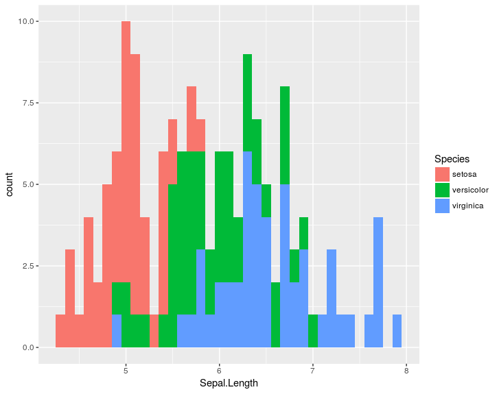
podemos também usar o parâmetro position da função geom_histogram() para especificar baras lado a lado ou empilhadas . Teste as opções dodge e fill , o default é stack.
xxxxxxxxxxggplot(iris, aes( Sepal.Length,fill=Species)) +geom_histogram(bins=10,position = "dodge")
Teste também as opções de coordenadas cord_flip() e coord_polar()
xxxxxxxxxx ggplot(iris, aes( Sepal.Length,fill=Species)) + geom_histogram(bins=40) + coord_polar() + theme_linedraw()
a função geom_density() é semelhante, teste com parametro alpha
xxxxxxxxxxggplot(iris, aes( Sepal.Length,fill=Species)) +geom_density(binwidth=0.1,alpha=0.6) +theme_linedraw()
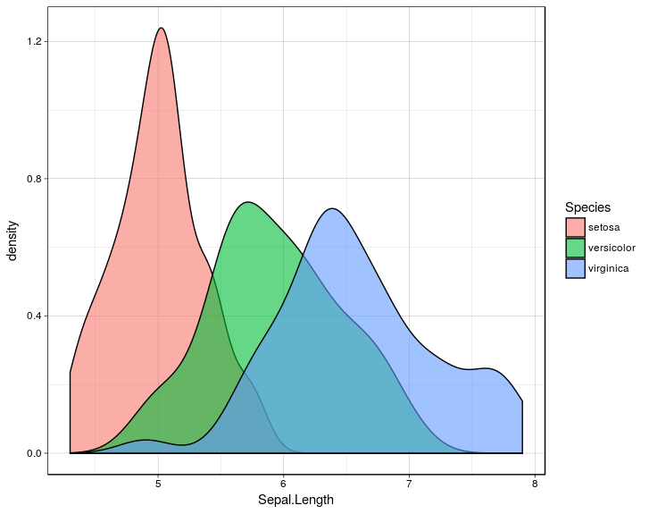
1.3 Gráfico de barras (barplot)
um barplot simples é facilmente obtido , veja que aqui nesse data.frame por default o total é "contado" pela função geom_bat() que tem como default o parâmetro stat="count" , ou seja, as ocorrências de cada tipo da variável vore serão contadas e exibidas no gráfico gerado.
xxxxxxxxxxggplot(msleep, aes(vore)) + geom_bar() ## bar plot!!!!
mas se tivermos o seguinte dado, como fazer para ter um barplot
xxxxxxxxxx exemplo <- data.frame(sexo = c( "Masculino", "Feminino","Ignorado"), total = c(4567,3867,90))
uma primeira tentativa seria:
xxxxxxxxxxggplot(exemplo,aes(sexo)) + geom_bar()
ou quem sabe
xxxxxxxxxxggplot(exemplo,aes(total)) + geom_bar()
parece que vamos precisar da variável sexo e também de total
xxxxxxxxxxggplot(exemplo,aes(sexo,total)) + geom_bar()Erro: stat_count() must not be used with a y aestheticcontinuamos sem sucesso mas a mensagem de erro da uma pista. a função geom_bar() está contando o numero de vezes que Feminino, Masculino e ignorado aparecem no data.frame, assim sendo precisamos além de especificar aes(sexo,total) também avisar a função geom_bar() para usar o valro de total
xxxxxxxxxx ggplot(exemplo,aes(sexo,total,fill=sexo)) + geom_bar(stat='identity')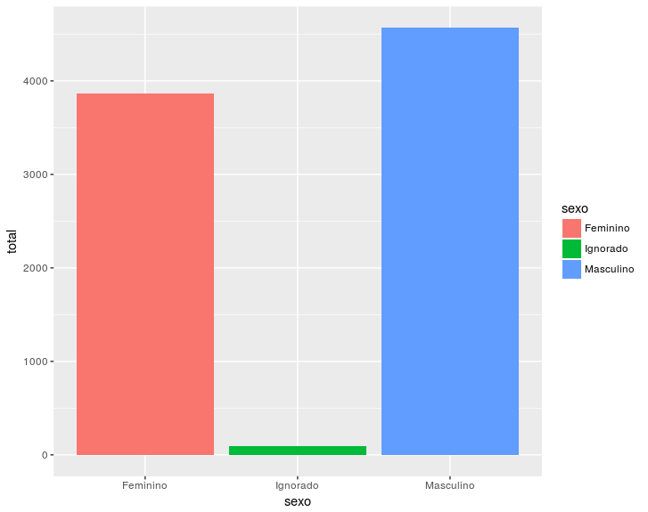
Valor olhar os dados
xxxxxxxxxxstr(exemplo)'data.frame': 3 obs. of 2 variables:$ sexo : Factor w/ 3 levels "Feminino","Ignorado",..: 3 1 2$ total: num 4567 3867 90
Observe que sexo é um fator e que por default a ordem do fator é alfabética, você pode confirmar isso pedindo
xxxxxxxxxx> levels(exemplo$sexo)[1] "Feminino" "Ignorado" "Masculino"
uma das principais razões de não conseguirmos fazer gráficos corretamente na ggplot2 tem a ver com a maneira que a biblioteca trata os fatores. Para resolver esse problema precisamos reordenar o fator para seguir a ordem de entrada.
xxxxxxxxxxexemplo$sexo<- factor(exemplo$sexo, levels=as.character(exemplo$sexo))
vamos conferir
xxxxxxxxxx> levels(exemplo$sexo)[1] "Masculino" "Feminino" "Ignorado"
e por fim fazer mais uma vez o nosso gráfico na ordem especificada no novo fator.
xxxxxxxxxx ggplot(exemplo,aes(sexo,total,fill=sexo)) + geom_bar(stat='identity')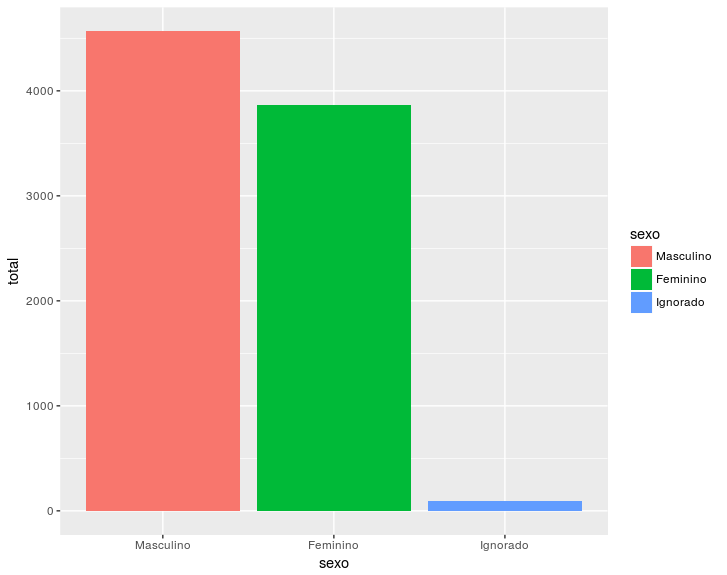
mais um exemplo, suponha que você tem dados das medias mensais de temperaturas medias , máximas , mínimas e precipitação do Rio de janeiro
xxxxxxxxxx rio <- data.frame( T_media = c(26.1, 26, 25.2, 23.6, 21.8, 20.9, 20.6, 21, 21.7, 22.5, 23.8, 24.6) , T_minima= c(22.3, 22.4, 21.7, 20.1, 18.2, 17, 16.7, 17, 18, 19, 20.3, 21), T_maxima = c(30, 29.7, 28.8, 27.2, 25.5, 24.9, 24.5, 25, 25.4, 26.1, 27.3, 28.2), Chuva = c(149, 147, 147, 130, 93, 58, 55, 59, 76, 103, 116, 145) , mes = c("Janeiro", "Fevereiro", "Março" , "Abril", "Maio", "Junho" , "Julho", "Agosto", "Setembro", "Outubro", "Novembro", "Dezembro"), stringsAsFactors = FALSE)antes de mais nada apos inspecionar os dados vamos corrigir o fator mes
xxxxxxxxxxrio$mes <- factor(rio$mes, levels=as.character(rio$mes))
e agora vamos produzir um gráfico de barras com os valores médios mensais e em cada barra os valores mínimo e máximo. Vamos colorir de acordo com uma escala de cores onde azul são temperaturas mais frias e vermelho as mais quentes.
xxxxxxxxxx ggplot(rio,aes(mes,T_media)) + geom_bar(aes(fill=T_media),stat='identity') + scale_fill_gradient(low= "blue",high="red") + geom_errorbar(aes(ymin=T_minima,ymax=T_maxima))
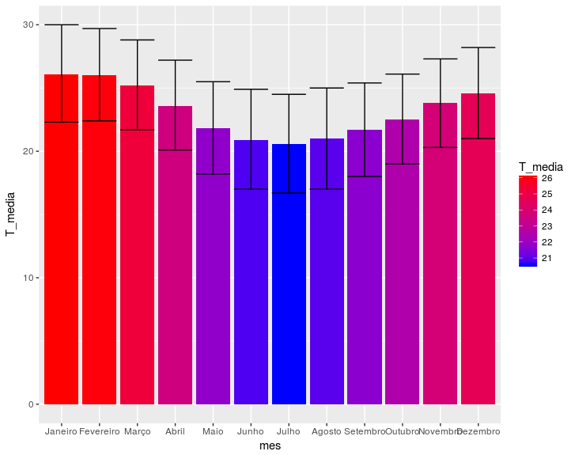
Repare no comando acima que temos duas funções geom_???() no mesmo gráfico, no caso uma faz as barras e outra as barras de erros. Esse é um recurso comumente empregado para adicionar diversas camadas a nosso gráfico.
1.4 boxplot
um boxplot básico teria
xxxxxxxxxxggplot(iris, aes( Species,Sepal.Length)) + geom_boxplot() + theme_linedraw()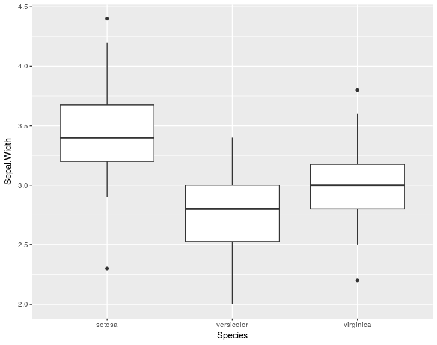
ou ainda algo por especie e com as coordenadas rodadas!
xxxxxxxxxxggplot(iris, aes(x = Species, y = Sepal.Width,fill=Species)) +geom_boxplot() +coord_flip()
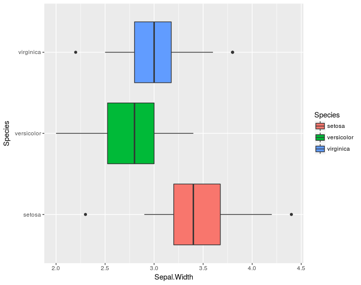
Suponha que necessitamos de um boxplot para as quatro variáveis do dataframe iris como fazer isso em ggplot2 ? no R padrão (graphics) faríamos
xxxxxxxxxxboxplot(iris$Sepal.Length,iris$Sepal.Width,iris$Petal.Length,iris$Petal.Width)
Este é onde a maioria dos iniciantes em ggplot2 se confunde. Para fazer isso é necessario transformar o dado para um formato longo, ou seja, apenas 3 colunas.
xxxxxxxxxxiris.wide <- iris %>% gather(tipo, valor, -Species)
use str() e head() para ver como ficou a nova estrutura de dados. A partir desse novo formato podemos:
xxxxxxxxxxggplot(iris.wide,aes(tipo,valor)) +geom_boxplot()
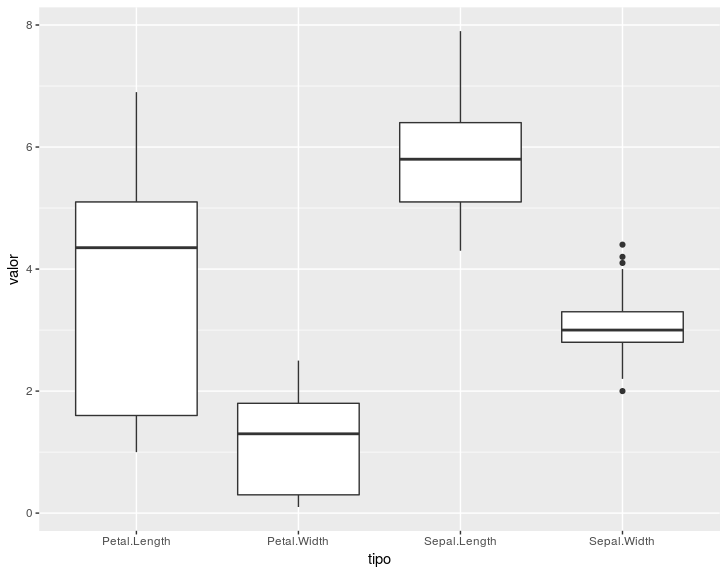
Se quisermos diferenciar por especie
xxxxxxxxxxggplot(iris.wide,aes(tipo,valor,fill=Species)) +geom_boxplot()
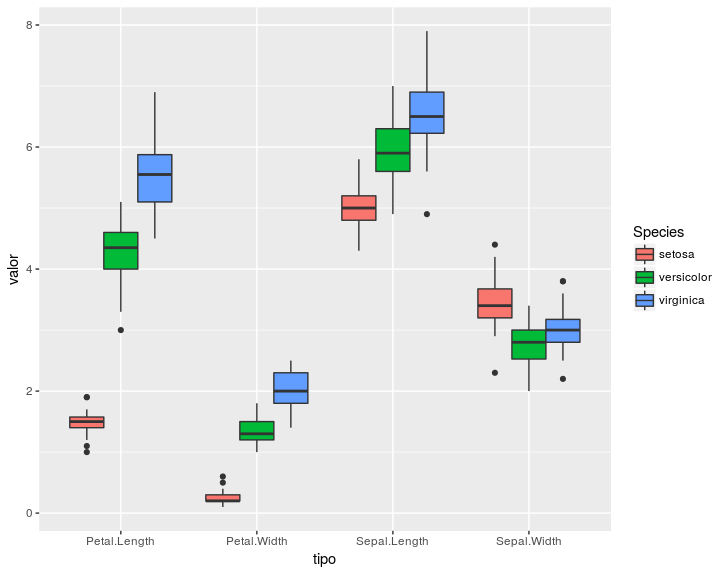
se quisermos agora subplots especie
xxxxxxxxxxggplot(iris.wide,aes(tipo,valor,fill=tipo)) +geom_boxplot() +facet_grid(~Species)
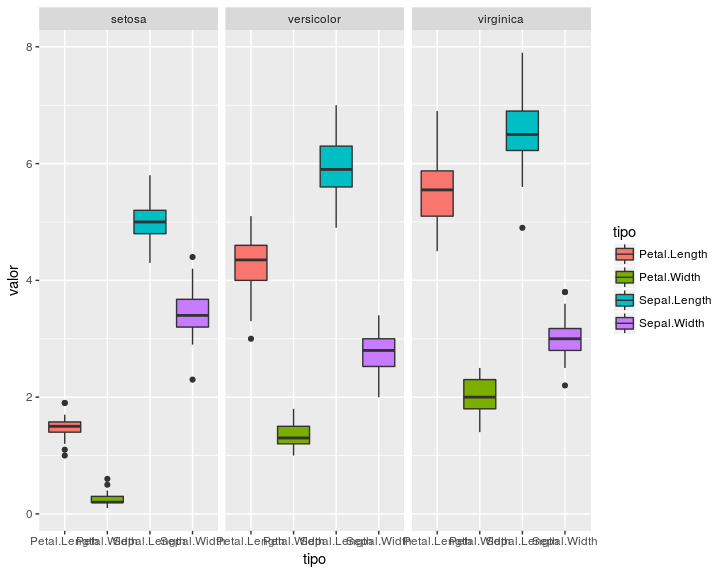
repare que o texto do label em x ficou confuso, como podemos modificar isso? Seria possível também eliminar a legenda a direita já que as variáveis tem label?
xxxxxxxxxxggplot(iris.wide,aes(tipo,valor,fill=tipo)) +geom_boxplot() +facet_grid(~Species) +theme(axis.text.x=element_text(angle=90,hjust=1),legend.position="none",panel.background =element_rect(fill="white",color="black") )
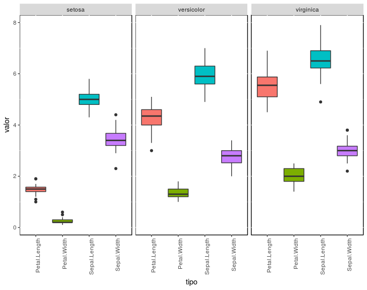
Repare que no gráfico acima customizamos o tema, mudando vários aspectos como a orientação do texto no label, e a cor de fundo no background. para se ter uma ideia de quantos parâmetros podem ser modificados no tema, use o comando
xxxxxxxxxxView(theme_grey())
1.5 gráficos de linha
O grafico de linha é um dos mais empregados , são necessárias duas variáveis x e y , em geral continuas. existem algumas funções que fazem
xxxxxxxxxxggplot(economics, aes(date, unemploy)) +geom_line(colour = "red")
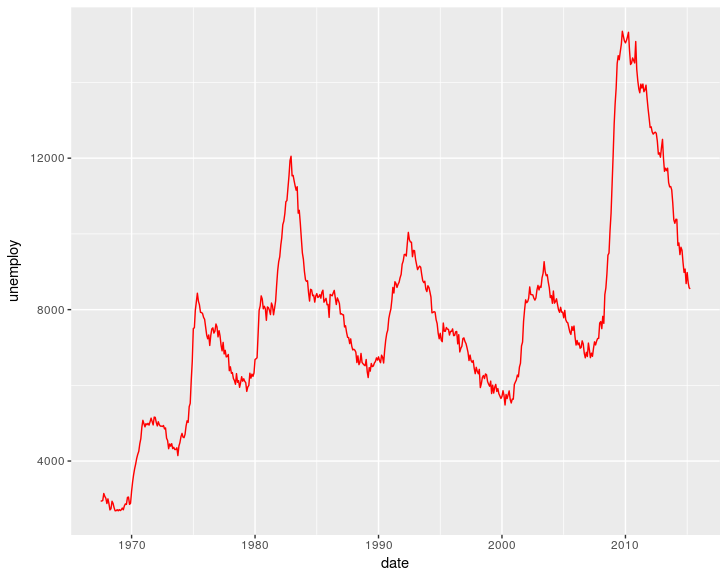
podemos também representar a área abaixo da linha
xxxxxxxxxxggplot(economics, aes(date, unemploy)) +geom_area(colour = "red",fill="blue",alpha=0.3) +theme_bw()
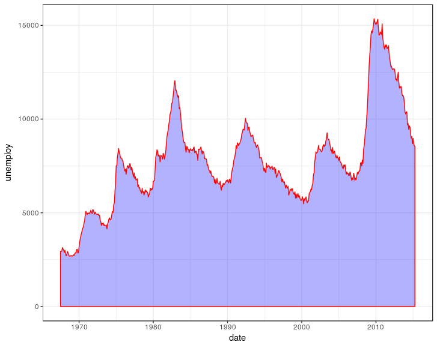
ou ainda como uma função em escada (step)
xxxxxxxxxxggplot(economics[1:32,], aes(date, unemploy)) +geom_step(colour = "red")
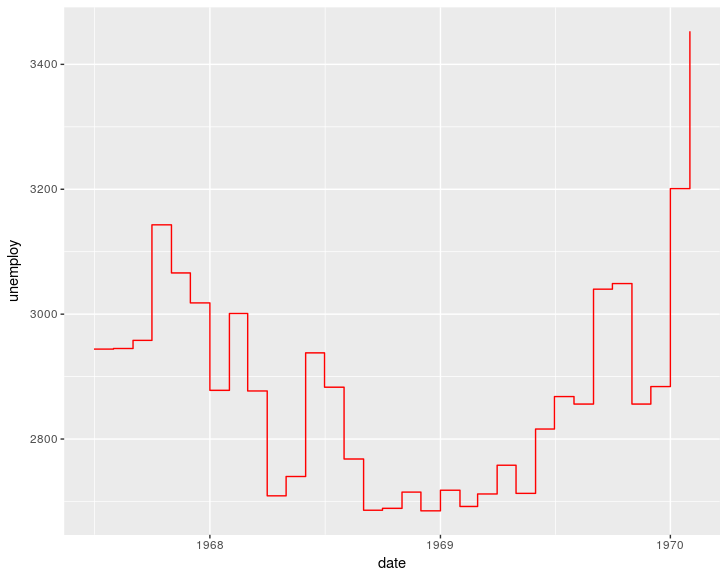
podemos representar vários elementos, como pontos e linhas suavizadas
xxxxxxxxxxggplot(economics, aes(date, unemploy)) +geom_point(size=0.5) +geom_smooth(colour="blue")
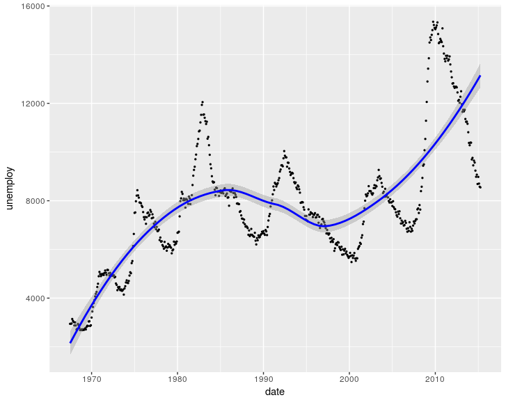
só para mostrar que podemos fazer linhas com outros tipos de dados
xxxxxxxxxxkilo <- data.frame(sexo = factor(c("Feminino","Feminino","Masculino","Masculino")),hora = factor(c("Almoço","Jantar","Almoço","Jantar"), levels=c("Almoço","Jantar")),gramas = c(289, 334, 450, 385))
Note que temos 2 fatores e uma variável numérica apenas.
xxxxxxxxxxggplot(data=kilo, aes(x=hora, y=gramas, group=sexo, shape=sexo, colour=sexo)) +geom_line(aes(linetype=sexo), size=1) +geom_point(size=5) +scale_colour_hue(name="Sexo",l=30) +scale_shape_manual(name="Sexo",values=c(22,21)) +scale_linetype_discrete(name="Sexo") +xlab("Refeição") + ylab("Gramas") +ggtitle("Quantidade consumida por 2 pessoas em um restaurante à Kilo") +theme_bw()
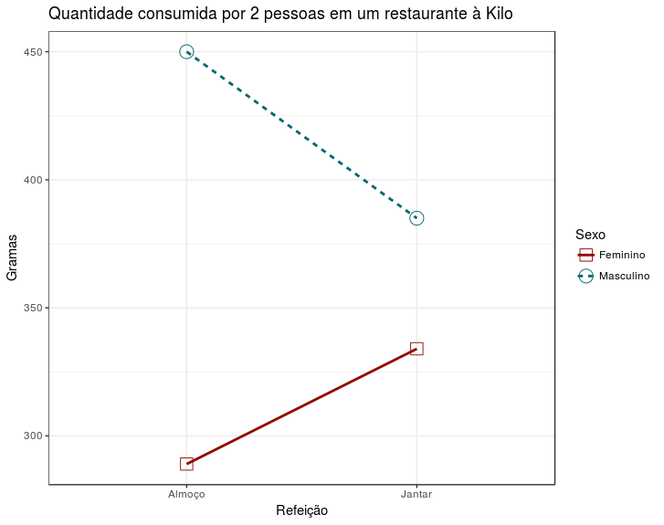
Existem ainda muitas outras funções que são capazes de produzir gráficos interessantes e complexos. Além da existência de muitos pacotes que estendem as funções da ggplot2, podemos destacar ggExtra, ggmaps, ggedit entre cerca de 70 outros.
Visite esses sites para ter algumas indeias/ inspirações
1.6 Gráficos interativos
Existem bibliotecas que implementam gráficos interativos que são compatíveis com a ggplot2 , segue um pequeno exemplo usando a plotly:
xxxxxxxxxxinstall.packages(plotly)
xxxxxxxxxxp <- ggplot(p <- economics, aes(date, unemploy)) +geom_line(colour = "red")library(plotly)ggplotly(p)
####1.7 Exercício
- Em apenas um gráfico o boxplot da variável Sepal.Length para cada uma das especies
- faça o boxplot acima no formato horizontal (ver função de coordenada para rodar o gráfico)
- o mesmo que acima com preenchimento de cor solido (parâmetro da função aes())